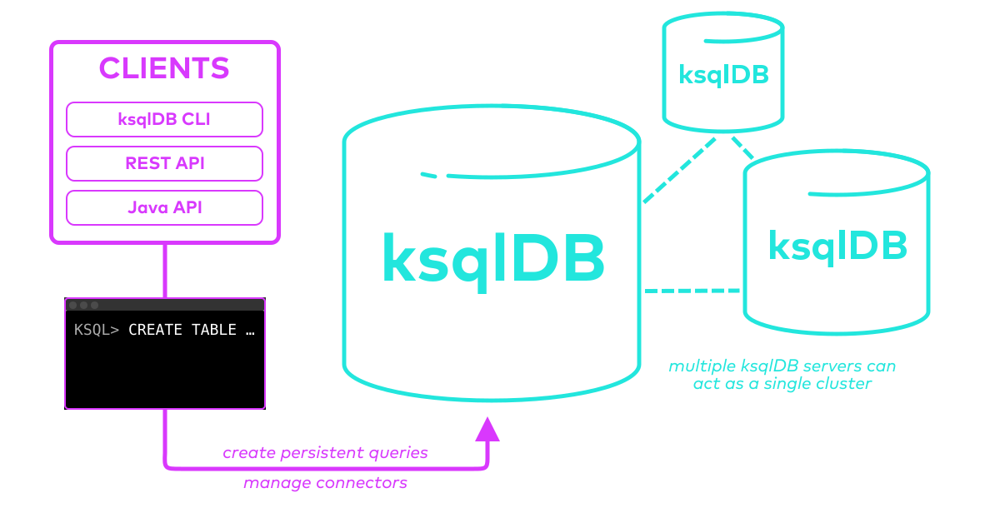

How ksqlDB works
Who am I?
Michael Drogalis
Principal Product Manager
ksqlDB & Stream Processing @ Confluent
How do I use my data in real-time?
It's not exactly simple.
What if it looked more like Postgres?

How you use it
The basics
Streams
CREATE STREAM readings (sensor VARCHAR KEY,
reading DOUBLE,
location VARCHAR)
WITH (kafka_topic='readings',
value_format='json',
partitions=3);
Rows
INSERT INTO readings (sensor, reading, location)
VALUES ('sensor-1', 45, 'wheel');
INSERT INTO readings (sensor, reading, location)
VALUES ('sensor-2', 41, 'motor');
INSERT INTO readings (sensor, reading, location)
VALUES ('sensor-1', 42, 'wheel');
INSERT INTO readings (sensor, reading, location)
VALUES ('sensor-3', 42, 'muffler');
...
Transforming a stream
-- pq1
CREATE STREAM clean AS
SELECT sensor,
reading,
UCASE(location) AS location
FROM readings
EMIT CHANGES;
Filtering rows out of a stream
-- pq1
CREATE STREAM clean AS
SELECT
sensor,
reading,
UCASE(location) AS location
FROM readings
EMIT CHANGES;
-- pq2
CREATE STREAM high_readings AS
SELECT sensor, reading, location
FROM clean
WHERE reading > 41
EMIT CHANGES;
Combining many operations into one
-- pq1
CREATE STREAM high_pri AS
SELECT sensor,
reading,
UCASE(location) AS location
FROM readings
WHERE reading > 41
EMIT CHANGES;
Processing with multiple consumers
-- pq1
CREATE STREAM high_pri AS
SELECT sensor,
reading,
UCASE(location) AS location
FROM readings
WHERE reading > 41
EMIT CHANGES;
-- pq2
CREATE STREAM by_location AS
SELECT *
FROM high_pri
PARTITION BY location
EMIT CHANGES;
-- pq3
CREATE STREAM s1_by_location AS
SELECT sensor,
reading,
UCASE(location) AS location
FROM s2
EMIT CHANGES;
Stateful functionality
Materializing a view from a stream
-- pq1
CREATE TABLE avg_readings AS
SELECT sensor,
AVG(reading) AS avg
FROM readings
GROUP BY sensor
EMIT CHANGES;
Automatic repartitioning
-- pq1
[[ internal ]]
-- pq2
CREATE TABLE part_avg AS
SELECT area,
AVG(reading) AS avg
FROM readings
GROUP BY area
EMIT CHANGES;
Replaying from changelogs
-- pq1
CREATE TABLE part_avg AS
SELECT area,
AVG(reading) AS avg
FROM readings
GROUP BY area
EMIT CHANGES;
Replaying from a compacted topic
-- pq1
CREATE TABLE part_avg AS
SELECT area,
AVG(reading) AS avg
FROM readings
GROUP BY area
EMIT CHANGES;
Scaling and fault tolerance
Scaling: 1x
Scaling: 2x
Scaling: 8x
Scaling with state
High availability
Thanks for watching!
Learn more and start using ksqlDB
at
ksqldb.io